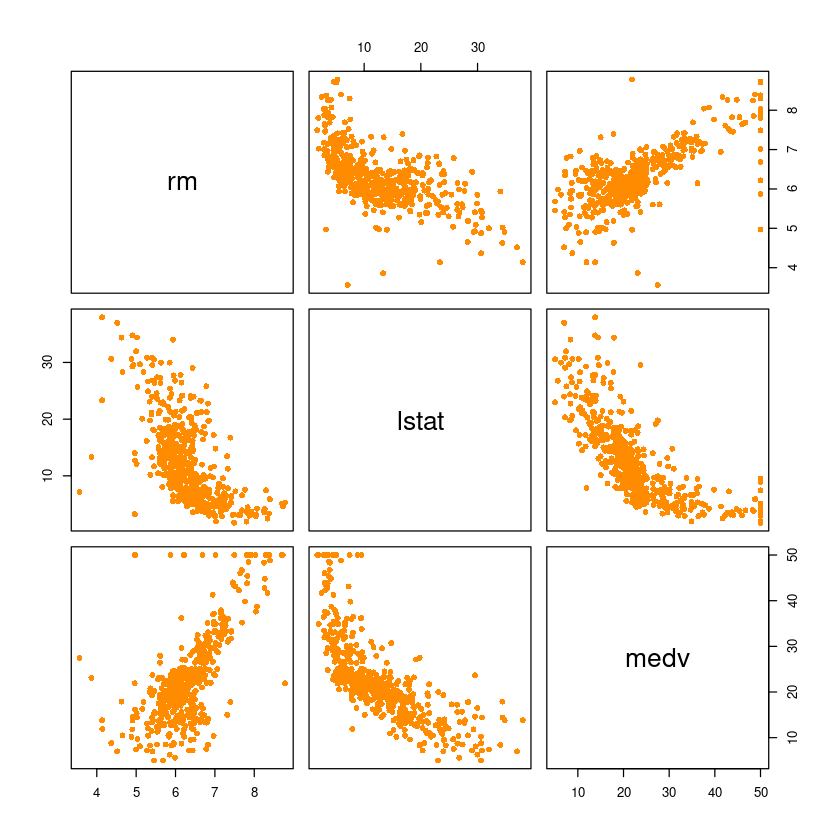
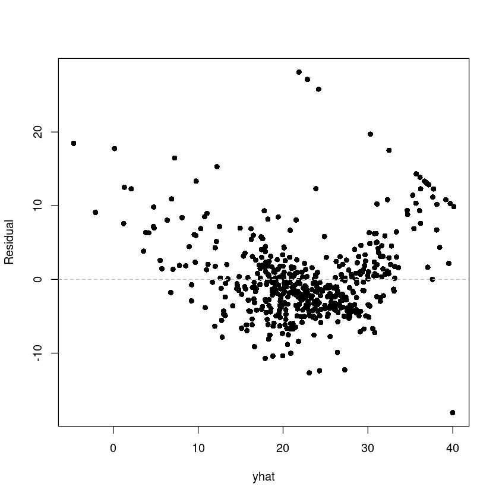
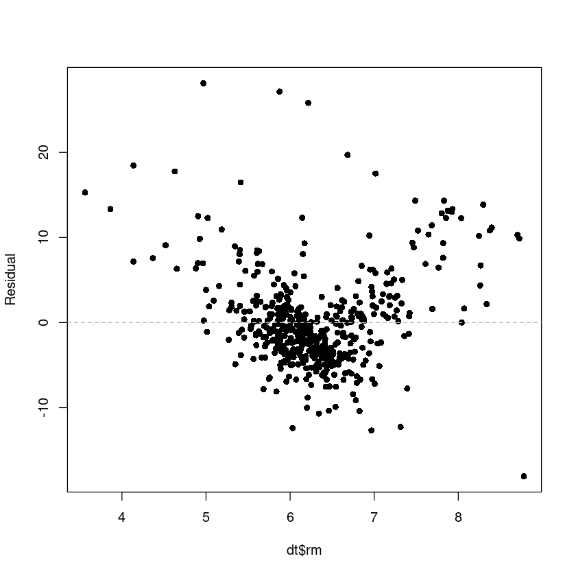
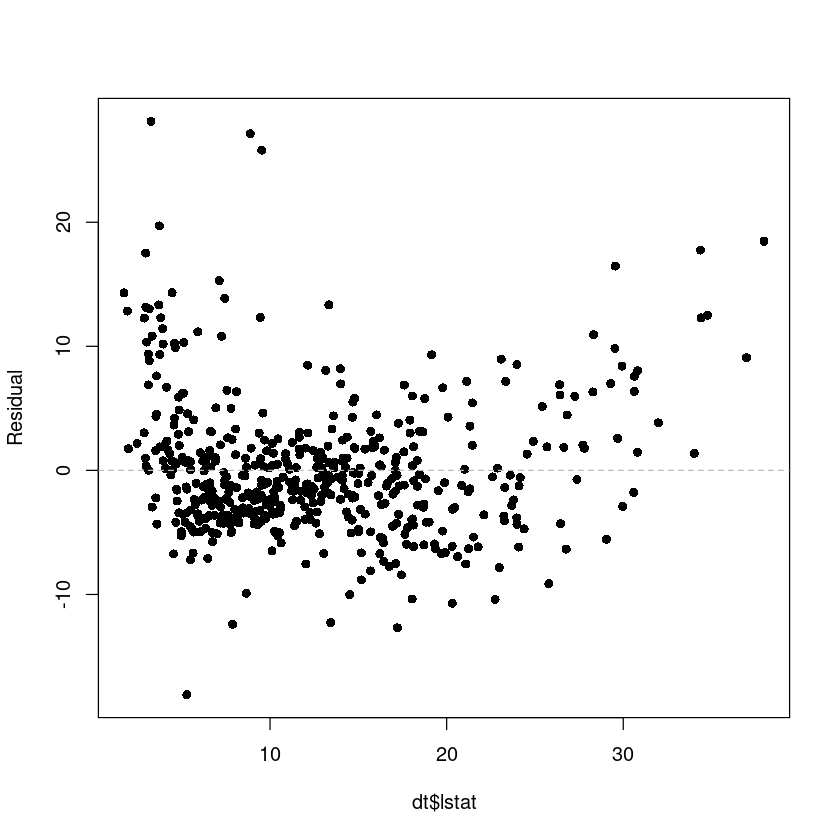
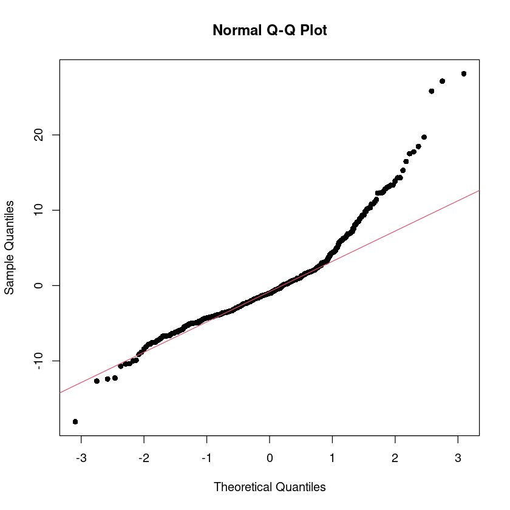
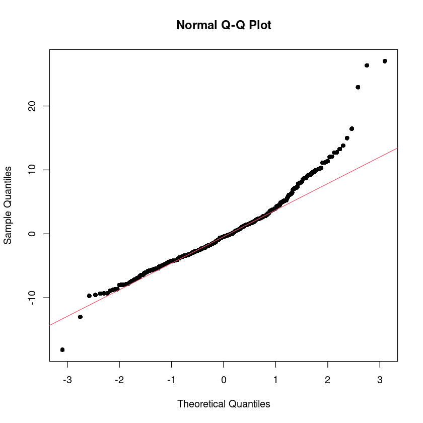

library(MASS)해당 강의노트는 전북대학교 이영미교수님 2022-2 고급회귀분석론 자료임
data(Boston)
head(Boston)
#보스턴 집값 데이터 이 데이터는 보스턴 근교 지역의 집값 및 다른 정보를 포함한다.
#MASS 패키지를 설치하면 데이터를 로딩할 수 있다.| crim | zn | indus | chas | nox | rm | age | dis | rad | tax | ptratio | black | lstat | medv | |
|---|---|---|---|---|---|---|---|---|---|---|---|---|---|---|
| <dbl> | <dbl> | <dbl> | <int> | <dbl> | <dbl> | <dbl> | <dbl> | <int> | <dbl> | <dbl> | <dbl> | <dbl> | <dbl> | |
| 1 | 0.00632 | 18 | 2.31 | 0 | 0.538 | 6.575 | 65.2 | 4.0900 | 1 | 296 | 15.3 | 396.90 | 4.98 | 24.0 |
| 2 | 0.02731 | 0 | 7.07 | 0 | 0.469 | 6.421 | 78.9 | 4.9671 | 2 | 242 | 17.8 | 396.90 | 9.14 | 21.6 |
| 3 | 0.02729 | 0 | 7.07 | 0 | 0.469 | 7.185 | 61.1 | 4.9671 | 2 | 242 | 17.8 | 392.83 | 4.03 | 34.7 |
| 4 | 0.03237 | 0 | 2.18 | 0 | 0.458 | 6.998 | 45.8 | 6.0622 | 3 | 222 | 18.7 | 394.63 | 2.94 | 33.4 |
| 5 | 0.06905 | 0 | 2.18 | 0 | 0.458 | 7.147 | 54.2 | 6.0622 | 3 | 222 | 18.7 | 396.90 | 5.33 | 36.2 |
| 6 | 0.02985 | 0 | 2.18 | 0 | 0.458 | 6.430 | 58.7 | 6.0622 | 3 | 222 | 18.7 | 394.12 | 5.21 | 28.7 |
B보스턴 근교 506개 지역에 대한 범죄율 (crim)등 14개의 변수로 구성
• crim : 범죄율
• zn: 25,000평방비트 기준 거지주 비율
• indus: 비소매업종 점유 구역 비율
• chas: 찰스강 인접 여부 (1=인접, 0=비인접)
• nox: 일산화질소 농도 (천만개 당)
• rm: 거주지의 평균 방 갯수 ***
• age: 1940년 이전에 건축된 주택의 비율
• dis: 보스턴 5대 사업지구와의 거리
• rad: 고속도로 진입용이성 정도
• tax: 재산세율 (10,000달러 당)
• ptratio: 학생 대 교사 비율
• black: 1000(B − 0.63)2, B: 아프리카계 미국인 비율
• lstat : 저소득층 비율 ****
• medv: 주택가격의 중앙값 (단위:1,000달러 당)
pairs(Boston[,which(names(Boston) %in% c('medv', 'rm', 'lstat'))], pch=16, col='darkorange')
fit_Boston<-lm(medv~rm+lstat, data=Boston)
summary(fit_Boston)
Call:
lm(formula = medv ~ rm + lstat, data = Boston)
Residuals:
Min 1Q Median 3Q Max
-18.076 -3.516 -1.010 1.909 28.131
Coefficients:
Estimate Std. Error t value Pr(>|t|)
(Intercept) -1.35827 3.17283 -0.428 0.669
rm 5.09479 0.44447 11.463 <2e-16 ***
lstat -0.64236 0.04373 -14.689 <2e-16 ***
---
Signif. codes: 0 ‘***’ 0.001 ‘**’ 0.01 ‘*’ 0.05 ‘.’ 0.1 ‘ ’ 1
Residual standard error: 5.54 on 503 degrees of freedom
Multiple R-squared: 0.6386, Adjusted R-squared: 0.6371
F-statistic: 444.3 on 2 and 503 DF, p-value: < 2.2e-16dt <- Boston[,which(names(Boston) %in% c('medv', 'rm', 'lstat'))]
head(dt)| rm | lstat | medv | |
|---|---|---|---|
| <dbl> | <dbl> | <dbl> | |
| 1 | 6.575 | 4.98 | 24.0 |
| 2 | 6.421 | 9.14 | 21.6 |
| 3 | 7.185 | 4.03 | 34.7 |
| 4 | 6.998 | 2.94 | 33.4 |
| 5 | 7.147 | 5.33 | 36.2 |
| 6 | 6.430 | 5.21 | 28.7 |
fit_Boston<-lm(medv~., data=dt)- hat y = -1.3583 + 5.0948rm - 0.6424lstat
anova(fit_Boston)
vcov(fit_Boston) ##var(hat beta) = (X^TX)^-1 \sigma^2| Df | Sum Sq | Mean Sq | F value | Pr(>F) | |
|---|---|---|---|---|---|
| <int> | <dbl> | <dbl> | <dbl> | <dbl> | |
| rm | 1 | 20654.42 | 20654.41622 | 672.9039 | 8.266887e-95 |
| lstat | 1 | 6622.57 | 6622.56999 | 215.7579 | 6.669365e-41 |
| Residuals | 503 | 15439.31 | 30.69445 | NA | NA |
| (Intercept) | rm | lstat | |
|---|---|---|---|
| (Intercept) | 10.06683612 | -1.39248641 | -0.099178133 |
| rm | -1.39248641 | 0.19754958 | 0.011930670 |
| lstat | -0.09917813 | 0.01193067 | 0.001912441 |
confint(fit_Boston, level = 0.95)| 2.5 % | 97.5 % | |
|---|---|---|
| (Intercept) | -7.5919003 | 4.8753547 |
| rm | 4.2215504 | 5.9680255 |
| lstat | -0.7282772 | -0.5564395 |
coef(fit_Boston) + qt(0.975, 503) * summary(fit_Boston)$coef[,2]
coef(fit_Boston) - qt(0.975, 503) * summary(fit_Boston)$coef[,2]- (Intercept)
- 4.87535465808391
- rm
- 5.9680255329079
- lstat
- -0.556439501179164
- (Intercept)
- -7.59190028183295
- rm
- 4.22155043576519
- lstat
- -0.728277167309094
############# 평균반응, 개별 y 추정
## E(Y|x0), y = E(Y|x0) + epsilon
new_dt <- data.frame(rm=7, lstat=10)# hat y0 = -1.3583 + 5.0948*7 - 0.6424*10
predict(fit_Boston, newdata = new_dt)
1: 27.88165973604
predict(fit_Boston,
newdata = new_dt,
interval = c("confidence"),
level = 0.95) ##평균반응| fit | lwr | upr | |
|---|---|---|---|
| 1 | 27.88166 | 27.17347 | 28.58985 |
predict(fit_Boston, newdata = new_dt,
interval = c("prediction"),
level = 0.95) ## 개별 y| fit | lwr | upr | |
|---|---|---|---|
| 1 | 27.88166 | 16.97375 | 38.78957 |
############ 잔차분석
### epsilon : 선형성, 등분산성, 정규성, 독립성
yhat <- fitted(fit_Boston)
res <- resid(fit_Boston)
plot(res ~ yhat,pch=16, ylab = 'Residual')
abline(h=0, lty=2, col='grey')
plot(res ~ dt$rm,pch=16, ylab = 'Residual')
abline(h=0, lty=2, col='grey')
plot(res ~ dt$lstat,pch=16, ylab = 'Residual')
abline(h=0, lty=2, col='grey')
# 독립성검정 : DW test
library(lmtest)
##
dwtest(fit_Boston, alternative = "two.sided") #H0 : uncorrelated vs H1 : rho != 0Loading required package: zoo
Attaching package: ‘zoo’
The following objects are masked from ‘package:base’:
as.Date, as.Date.numeric
Durbin-Watson test
data: fit_Boston
DW = 0.83421, p-value < 2.2e-16
alternative hypothesis: true autocorrelation is not 0## 잔차의 QQ plot
qqnorm(res, pch=16)
qqline(res, col = 2)
head(dt)
dt$lstat2 <- (dt$lstat)^2
head(dt)
fit_Boston2<-lm(medv~., data=dt)| rm | lstat | medv | |
|---|---|---|---|
| <dbl> | <dbl> | <dbl> | |
| 1 | 6.575 | 4.98 | 24.0 |
| 2 | 6.421 | 9.14 | 21.6 |
| 3 | 7.185 | 4.03 | 34.7 |
| 4 | 6.998 | 2.94 | 33.4 |
| 5 | 7.147 | 5.33 | 36.2 |
| 6 | 6.430 | 5.21 | 28.7 |
| rm | lstat | medv | lstat2 | |
|---|---|---|---|---|
| <dbl> | <dbl> | <dbl> | <dbl> | |
| 1 | 6.575 | 4.98 | 24.0 | 24.8004 |
| 2 | 6.421 | 9.14 | 21.6 | 83.5396 |
| 3 | 7.185 | 4.03 | 34.7 | 16.2409 |
| 4 | 6.998 | 2.94 | 33.4 | 8.6436 |
| 5 | 7.147 | 5.33 | 36.2 | 28.4089 |
| 6 | 6.430 | 5.21 | 28.7 | 27.1441 |
fit_Boston2<-lm(medv~rm+lstat+I(lstat^2), data=Boston)
summary(fit_Boston2)
Call:
lm(formula = medv ~ rm + lstat + I(lstat^2), data = Boston)
Residuals:
Min 1Q Median 3Q Max
-18.1427 -3.2429 -0.4829 2.3607 27.0256
Coefficients:
Estimate Std. Error t value Pr(>|t|)
(Intercept) 11.68964 3.13810 3.725 0.000217 ***
rm 4.22727 0.41172 10.267 < 2e-16 ***
lstat -1.84863 0.12213 -15.136 < 2e-16 ***
I(lstat^2) 0.03634 0.00348 10.443 < 2e-16 ***
---
Signif. codes: 0 ‘***’ 0.001 ‘**’ 0.01 ‘*’ 0.05 ‘.’ 0.1 ‘ ’ 1
Residual standard error: 5.027 on 502 degrees of freedom
Multiple R-squared: 0.7031, Adjusted R-squared: 0.7013
F-statistic: 396.2 on 3 and 502 DF, p-value: < 2.2e-16
yhat2 <- fitted.values(fit_Boston2)
res2 <- resid(fit_Boston2)
plot(res2 ~ yhat2,pch=16, ylab = 'Residual')
abline(h=0, lty=2, col='grey')
qqnorm(res2, pch=16)
qqline(res2, col = 2)
dwtest(fit_Boston2, alternative = "two.sided") #H0 : uncorrelated vs H1 : rho != 0
Durbin-Watson test
data: fit_Boston2
DW = 0.84831, p-value < 2.2e-16
alternative hypothesis: true autocorrelation is not 0fit_Boston3 <- lm(medv~rm, data=Boston)
fit_Boston4 <- lm(medv~lstat, data=Boston)summary(fit_Boston3)
Call:
lm(formula = medv ~ rm, data = Boston)
Residuals:
Min 1Q Median 3Q Max
-23.346 -2.547 0.090 2.986 39.433
Coefficients:
Estimate Std. Error t value Pr(>|t|)
(Intercept) -34.671 2.650 -13.08 <2e-16 ***
rm 9.102 0.419 21.72 <2e-16 ***
---
Signif. codes: 0 ‘***’ 0.001 ‘**’ 0.01 ‘*’ 0.05 ‘.’ 0.1 ‘ ’ 1
Residual standard error: 6.616 on 504 degrees of freedom
Multiple R-squared: 0.4835, Adjusted R-squared: 0.4825
F-statistic: 471.8 on 1 and 504 DF, p-value: < 2.2e-16summary(fit_Boston4)
Call:
lm(formula = medv ~ lstat, data = Boston)
Residuals:
Min 1Q Median 3Q Max
-15.168 -3.990 -1.318 2.034 24.500
Coefficients:
Estimate Std. Error t value Pr(>|t|)
(Intercept) 34.55384 0.56263 61.41 <2e-16 ***
lstat -0.95005 0.03873 -24.53 <2e-16 ***
---
Signif. codes: 0 ‘***’ 0.001 ‘**’ 0.01 ‘*’ 0.05 ‘.’ 0.1 ‘ ’ 1
Residual standard error: 6.216 on 504 degrees of freedom
Multiple R-squared: 0.5441, Adjusted R-squared: 0.5432
F-statistic: 601.6 on 1 and 504 DF, p-value: < 2.2e-16x1<-c(4,8,9,8,8,12,6,10,6,9)
x2<-c(4,10,8,5,10,15,8,13,5,12)
y<-c(9,20,22,15,17,30,18,25,10,20)
fit<-lm(y~x1+x2) ##FM
summary(fit)
Call:
lm(formula = y ~ x1 + x2)
Residuals:
Min 1Q Median 3Q Max
-2.4575 -1.9100 0.3314 0.6388 3.2628
Coefficients:
Estimate Std. Error t value Pr(>|t|)
(Intercept) -0.6507 2.9075 -0.224 0.8293
x1 1.5515 0.6462 2.401 0.0474 *
x2 0.7599 0.3968 1.915 0.0970 .
---
Signif. codes: 0 ‘***’ 0.001 ‘**’ 0.01 ‘*’ 0.05 ‘.’ 0.1 ‘ ’ 1
Residual standard error: 2.278 on 7 degrees of freedom
Multiple R-squared: 0.9014, Adjusted R-squared: 0.8732
F-statistic: 32 on 2 and 7 DF, p-value: 0.0003011anova(fit)| Df | Sum Sq | Mean Sq | F value | Pr(>F) | |
|---|---|---|---|---|---|
| <int> | <dbl> | <dbl> | <dbl> | <dbl> | |
| x1 | 1 | 313.04348 | 313.043478 | 60.323103 | 0.0001100467 |
| x2 | 1 | 19.03040 | 19.030400 | 3.667135 | 0.0970444465 |
| Residuals | 7 | 36.32612 | 5.189446 | NA | NA |
# install.packages("car")
library(car)Loading required package: carData
## H0 : T*beta = c
#b1-b2=0 => (0,1,-1) *beta
#H_0 : beta_1 = beta2
linearHypothesis(fit, c(0,1,-1), 0)| Res.Df | RSS | Df | Sum of Sq | F | Pr(>F) | |
|---|---|---|---|---|---|---|
| <dbl> | <dbl> | <dbl> | <dbl> | <dbl> | <dbl> | |
| 1 | 8 | 39.53514 | NA | NA | NA | NA |
| 2 | 7 | 36.32612 | 1 | 3.209014 | 0.6183731 | 0.4574425 |
#H_0 : beta_1 = 1
linearHypothesis(fit, c(0,1,0), 1)| Res.Df | RSS | Df | Sum of Sq | F | Pr(>F) | |
|---|---|---|---|---|---|---|
| <dbl> | <dbl> | <dbl> | <dbl> | <dbl> | <dbl> | |
| 1 | 8 | 40.10492 | NA | NA | NA | NA |
| 2 | 7 | 36.32612 | 1 | 3.778797 | 0.7281696 | 0.4217136 |
#H_0 : beta_1 = beta2 + 1
linearHypothesis(fit, c(0,1,-1), 1)| Res.Df | RSS | Df | Sum of Sq | F | Pr(>F) | |
|---|---|---|---|---|---|---|
| <dbl> | <dbl> | <dbl> | <dbl> | <dbl> | <dbl> | |
| 1 | 8 | 36.54865 | NA | NA | NA | NA |
| 2 | 7 | 36.32612 | 1 | 0.2225273 | 0.04288074 | 0.841845 |
##H_0 : beta_1 = beta2 + 1
#y=b0 + b1x1 + b2x2 + e = b0+x1 + b2(x1+x2)+e
#y-x1 = b0+b2(x1+x2)+e : RM
y1 <- y-x1
z1 <- x1 + x2fit2 <- lm(y1~z1)
summary(fit2)
anova(fit2)
Call:
lm(formula = y1 ~ z1)
Residuals:
Min 1Q Median 3Q Max
-2.5054 -1.9294 0.4236 0.6821 3.4473
Coefficients:
Estimate Std. Error t value Pr(>|t|)
(Intercept) -1.0014 2.2175 -0.452 0.663574
z1 0.6824 0.1242 5.493 0.000578 ***
---
Signif. codes: 0 ‘***’ 0.001 ‘**’ 0.01 ‘*’ 0.05 ‘.’ 0.1 ‘ ’ 1
Residual standard error: 2.137 on 8 degrees of freedom
Multiple R-squared: 0.7904, Adjusted R-squared: 0.7642
F-statistic: 30.17 on 1 and 8 DF, p-value: 0.0005785| Df | Sum Sq | Mean Sq | F value | Pr(>F) | |
|---|---|---|---|---|---|
| <int> | <dbl> | <dbl> | <dbl> | <dbl> | |
| z1 | 1 | 137.85135 | 137.851351 | 30.17378 | 0.0005784583 |
| Residuals | 8 | 36.54865 | 4.568581 | NA | NA |
anova(fit) ##FM
anova(fit2) #RM| Df | Sum Sq | Mean Sq | F value | Pr(>F) | |
|---|---|---|---|---|---|
| <int> | <dbl> | <dbl> | <dbl> | <dbl> | |
| x1 | 1 | 313.04348 | 313.043478 | 60.323103 | 0.0001100467 |
| x2 | 1 | 19.03040 | 19.030400 | 3.667135 | 0.0970444465 |
| Residuals | 7 | 36.32612 | 5.189446 | NA | NA |
| Df | Sum Sq | Mean Sq | F value | Pr(>F) | |
|---|---|---|---|---|---|
| <int> | <dbl> | <dbl> | <dbl> | <dbl> | |
| z1 | 1 | 137.85135 | 137.851351 | 30.17378 | 0.0005784583 |
| Residuals | 8 | 36.54865 | 4.568581 | NA | NA |
# F = {(SSE_RM - SSE_FM)/r} / {SSE_FM/(n-p-1)}
SSE_FM <- anova(fit)$Sum[3] #SSE_FM
SSE_RM <- anova(fit2)$Sum[2] #SSE_RMF0 <- (SSE_RM-SSE_FM)/(SSE_FM/7)
F0
0.0428807391894599
#기각역 F_{0.05}(1,7)
qf(0.95, 1, 7)
5.59144785122073